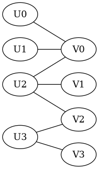

PS 05 -- Matching & Finite state machines **Solutions**
A mining company needs to set up supply line between a set of quarries \(U\) and a set of processing plants \(W\). The company is interested in setting up perfect matchings of quarries to plants, i.e. each quarry should have a supply line to a unique processing plant, such that no quarry or plant is on two supply lines. Conveniently, there are as many quarries as there are processing plants. Less conveniently, supply lines need to travel along roads. Let \(E\) be the set of roads. We assume that each road in \(E\) starts at a quarry and travels directly to a processing plant, and that the roads do not intersect.
Suppose that |U| = |W| = 4 and that there are seven roads total. Construct an example where no perfect matching is possible.
Suggestion: for this problem and the rest, we suggest you model this set up as a bipartite graph.
Write
U0,U1,U2,U3for theU-nodes, and similarly for theVnodes. Then
describes a bi-partite graph with 7 edges and no perfect matches. To see that there are no perfect matchings, note that the set
[U0,U1]has two elements, but its set of neighbors is[V0], which has only one element. So the “marriage Theorem” implies that there is no perfect matching.(Of course, there are many other graphs that work!)
If no perfect matching exists, the company would like to know what is the maximal number of quarry/plant pairs such that no quarry or plant is on two supply chains (call this a maximal matching). Compute this for your example in a). How many additional roads must be made in order for a perfect matching to exist?
We know there can be no perfect matching, so any matching
Mmust have size<= 3. So we will have found a maximal matching if we find a matching of size3.Now, just notice that
M = [(U1,V0),(U2,V1),(U3,V2)]is a matching of length 3; it is therefore a maximal matching.We only need 1 additional edge (road) to create a perfect matching; namely, we require the existence of an edge
(U0,V3).If \(|U| = |W| = n\), what is the largest possible size of \(E\)? Give your answer as an expression in \(n\).
Each vertex
u ∈ Ucan be connected to at mostnvertices inV. Since there arenchoices foru, there are no more thann*n=\(n²\) edges.Suppose that for each \(x ∈ U\), there is exactly one road involving \(x\), and write this edge as \(x → w(x)\) for some \(w(x) ∈ W\). Explain why the size of a maximum matching is equal to the number of distinct nodes \(\{w(x)\}\).
Write
W0 = [ w(x) for x in V ]. We must argue two things:any matching
Mhas|M| <= |W0|,there is a matching
M0with|M0| = |W0|.
If
Mis any matching, consider the subsetT=[ v for (u,v) in M ]ofWconsisting of the targets of edges inM. By the assumption on the graph,Tis contained in the setW0, so|M| = |T| <= |W0|This proves the first requirement.
As to the second, for each
w in W0we may choose an elementx_w in Vwithw = w(x_w).(We can even make this choice algorithmic if we choose an ordering of
V. To findx_wfor a givenw in W, we just search through elementsxofVin order, and take forx_wthe first elementx in Vfor whichw(x) = w.)Then form the matching
M0 = [ (x_w,w) for w in W0 ]Then
|M0| = |W0|so by the previous observation,M0is a maximal matching.(Optional) Suppose that
|U| = |W| = nand letm = |E|. Can you always find a configuration of roads such that a perfect matching is impossible? Put differently, is there a minimal m such that a perfect matching will exist no matter how the roads are placed?At one extreme, for the regular graph having \(n²\) edges, there is of course a perfect matching; e.g. this follows from the Marriage Theorem, since
|N(X)| = n >= |X|for each non-empty subsetXofV.At the other extreme, we see from (d) that there are graphs with
|E| = nfor which there is no perfect matching (in the notation of part (d), just arrange that|W0| = length([ w(x) for x in V ]) < n.(For example, this can be achieved by choosing a vertex
w0inW, and - in the notation of (d) - declare thatw(x) = w0for everyx in V.)So there is some minimal
mwith \(n < m ≤ n^2\) such that if|E| = mthere is always a perfect matching. Of course, this argument doesn’t give a formula form…
A streaming service wants to model the annual growth rate of its subscribers. The data shows that they can roughly predict the behavior of customers based on how long they have been users of the service: Let \(p_n\) be the current number of subscribers who have had the service for less than a year, and \(p_o\) be the current number of subscribers who have had the service for more than a year (so in total there are \(p_n + p_o\) subscribers). For convenience we will refer to the two types of subscriber as “new” and “old”.
Let \(\mathbf{p}= \begin{bmatrix} p_n \\ p_o \end{bmatrix}\) be a vector recording the current subscriber population, and write \(\mathbf{p}^*\) be the subscriber population in one year’s time. Then the data shows that \(\mathbf{p}∗ = A\mathbf{p}\), where \(A\) is the matrix given by \[A = \begin{bmatrix} 1 & 0 \\ 0.8 & 0.5 \end{bmatrix}.\]
This is, writing \(\mathbf{p}^* = \begin{bmatrix} q_n \\ q_o \end{bmatrix}\), there will be \(q_n\) “new” users in one years time, and \(q_o\) “old” users.
What percentage of current new users will still be subscribed by the start of the next year?
How does this retention rate differ for old users?
Since \(A \begin{bmatrix} 1 \\ 0 \end{bmatrix} = \begin{bmatrix} 1 \\ 0.8 \end{bmatrix}\), we see that 80% of the current new users will be old users next year.
On the other hand, \(A \begin{bmatrix} 0 \\ 1 \end{bmatrix} = \begin{bmatrix} 0 \\ 0.5 \end{bmatrix}\), so we see that 50% of current old users will remain old users next year.
The retention rate is higher for new users.
It turns out that A has eigenvalues \(λ = 1\) and \(\lambda = 0.5\). Find an eigenvector for the eigenvalue \(λ = 1\) and use it to describe the long term behavior of the user population for this streaming service. In the long run, what will the ratio of new to old users be?
To find an eigenvector for \(\lambda = 1\), we must solve the matrix equation \[0 = (A - I)\mathbf{x}= \begin{bmatrix} 0 & 0 \\ 0.8 & -0.5 \end{bmatrix} \mathbf{x}.\] So \[\mathbf{x}= \begin{bmatrix} 0.5 \\ 0.8 \end{bmatrix}\] is a 1-eigenvector.
Since \(.5 < 1\), we know that \[\lim_{n \to \infty} A^n \mathbf{p}= \mathbf{x} = c \begin{bmatrix} 0.5 \\ 0.8 \end{bmatrix}\] for some constant \(c\).
(Indeed, let \(\mathbf{y}\) be a
0.5-eigenvector. Then \(\mathbf{x},\mathbf{y}\) form a basis for \(\mathbb{R}^2\), so we may write \(\mathbf{p}= a \mathbf{x}+ b \mathbf{y}\) for scalars \(a,b\). Then \[A^n\mathbf{p}= a (A^n \mathbf{x}) + b(A^n \mathbf{y}) = a \mathbf{x}+ b (1/2)^n \mathbf{y}\to a \mathbf{x}\] as \(n \to \infty\)).Now, \(A \mathbf{p}\) represents the state after 1 year, \(A^2 \mathbf{p}\) represents the state after 2 years, and \(A^n \mathbf{p}\) represents the state after \(n\) years. In the limit, we see that the equilibrium state is \(c \begin{bmatrix} 0.5 \\ 0.8 \end{bmatrix}.\) In particular, we see that the ratio
(# new users)/(# old users)is given by5/8.(This calculation depends on the assumption that the initial condition is not just a multiple of the \(0.5\)-eigenvector, otherwise \(c=0\).
Note that a \(0.5\)-eigenvector is \(\mathbf{y}=\begin{bmatrix} 0 \\ 1 \end{bmatrix}\). Thus, so long as there are some new users in the first year, \(c \ne 0\) so in the long run the ratio of new to old users is indeed 5/8.)
Suppose that a different streaming service has the rate matrix \[B = \begin{bmatrix} 0.5 & 0 \\ 0.8 & 0.4 \end{bmatrix}.\]
The matrix \(B\) has \(λ = 0.5\) and \(\lambda = 0.4\) as its eigenvalues. Using the eigenvector for the larger of the two eigenvalues, describe the long term behavior of this streaming service?
Let \(\mathbf{x}\) be a \(0.5\)-eigenvector and \(\mathbf{y}\) be a \(0.4\)-eigenvector.
Since \(\mathbf{x},\mathbf{y}\) form a basis for \(\mathbb{R}^2\), we can write \(\mathbf{p}= a \mathbf{x}+ b \mathbf{y}\) for scalars \(a,b\). Now,
For a natural number \(n\), we have \[A^n \mathbf{p}= A^n (a \mathbf{x}+ b \mathbf{y}) = a (0.5)^n \mathbf{x}+ b (0.4)^n \mathbf{y}\to 0\] as \(n \to \infty\).
Thus eventually this system will lose all its users.
Suppose that both streaming services (which we will refer to by their rate matrices \(A\) and \(B\)), start with the same population vector p this year, and that both charge $n for a yearly subscription. Write an expression (in terms of n, pa , pb ) for the total income obtained by A and B after 4 years.
\(A^j \mathbf{p}\) and \(B^j \mathbf{p}\) are the vectors describing the populations in year \(j\).
Write \(\mathbf{w}= \begin{bmatrix} 1 & 1 \end{bmatrix}\) and recall that for a population vector \(\mathbf{p}\), the total number of subscribers is given by \[\mathbf{w}\mathbf{p}= \begin{bmatrix} 1 & 1 \end{bmatrix} \begin{bmatrix} p_n \\ p_o \end{bmatrix} = p_n + p_0.\]
Thus the vector expressions for the total subscribers for the first four years are given by \[\operatorname{tot}_A = \mathbf{w}(\mathbf{p}+ A \mathbf{p}+ A^2 \mathbf{p}+ A^3 \mathbf{p})\] and \[\operatorname{tot}_B = \mathbf{w}(\mathbf{p}+ B \mathbf{p}+ B^2 \mathbf{p}+ B^3 \mathbf{p})\]
Let’s implement this in python:
import numpy as np import sympy as sp from numpy.linalg import matrix_power A = np.array([[1,0],[0.8,0.5]]) B = np.array([[0.5,0],[0.8,0.4]]) w = np.array([1,1]) pn,po = sp.symbols('p_n p_o') # initial (symbolic) population p = np.array([pn,po]) # compute the total number of subscribers after the indicated number of years # for service governed by `mat` def tot(mat,years): return w @ sum([matrix_power(mat,j) @ p for j in range(years)]) ## total number of subscribers for service A after 4 years print(tot(A,4)) => 7.4*p_n + 1.875*p_o ## total number of subscribers for service B after 4 years print(tot(B,4)) => 3.883*p_n + 1.624*p_o